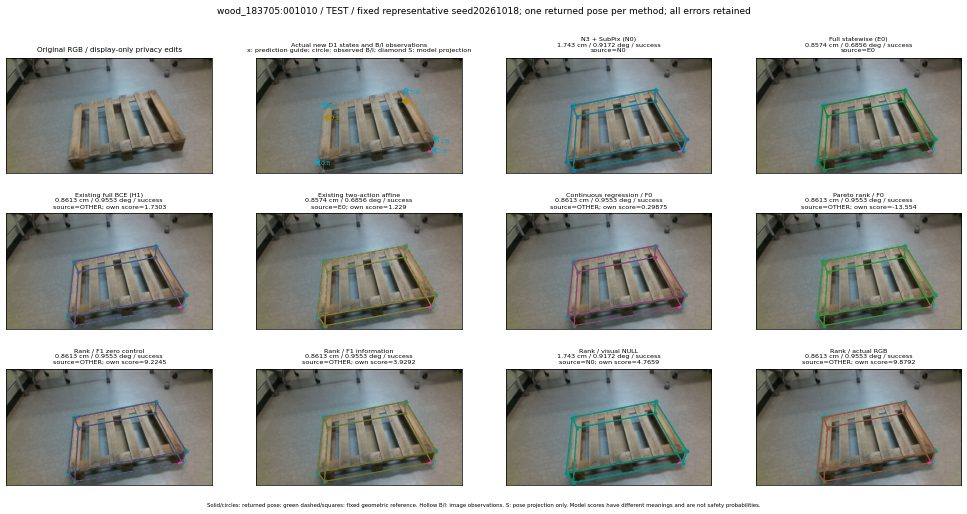

실선은 반환 자세, 초록 점선은 고정 기하 참조입니다. S는 영상 관측이 아닙니다. 점수는 모델별 의미가 다르며 보정된 안전 확률이 아닙니다. 개인정보 처리는 표시 사본에만 적용했습니다.
| 방법·seed | 위치 / 회전 / 공동성공 | 실제 출처 | 선택 후보 | 각 모델 자체 점수 |
|---|---|---|---|---|
| N0 | 1.743 cm / 0.9172 deg / success | N0 | N/A | N/A |
| E0 | 0.8574 cm / 0.6856 deg / success | E0 | N/A | N/A |
| E0_REGENERATED | 0.8574 cm / 0.6856 deg / success | E0 | E0_REGENERATED | N/A |
| POSEFIX_SUBPIX_PF_ANCHOR | 1.289 cm / 0.4565 deg / success | OTHER | N/A | N/A |
| POSEFIX_SUBPIX_YOLO_ANCHOR | 1.289 cm / 0.4565 deg / success | OTHER | N/A | N/A |
| D1_H1_MLP_s20261018 | 0.8613 cm / 0.9553 deg / success | OTHER | WD0/ORIGINAL_WD/selected | 1.7302707433700562 |
| D1_H1_MLP_s20261019 | 0.8613 cm / 0.9553 deg / success | OTHER | WD0/ORIGINAL_WD/selected | 1.252447247505188 |
| D1_H1_MLP_s20261020 | 0.8613 cm / 0.9553 deg / success | OTHER | WD0/ORIGINAL_WD/selected | 2.487018585205078 |
| D1_H1_PAIR_MLP_s20261018 | 0.8574 cm / 0.6856 deg / success | E0 | E0_REGENERATED | 0.23559096455574036 |
| D1_H1_PAIR_MLP_s20261019 | 0.8574 cm / 0.6856 deg / success | E0 | E0_REGENERATED | 1.0209856033325195 |
| D1_H1_PAIR_MLP_s20261020 | 0.8574 cm / 0.6856 deg / success | E0 | E0_REGENERATED | 0.9874435663223267 |
| D1_H1_PAIR_ROLE_AFFINE_s20261018 | 0.8574 cm / 0.6856 deg / success | E0 | E0_REGENERATED | 1.2289772033691406 |
| D1_H1_PAIR_ROLE_AFFINE_s20261019 | 0.8574 cm / 0.6856 deg / success | E0 | E0_REGENERATED | 1.4728134870529175 |
| D1_H1_PAIR_ROLE_AFFINE_s20261020 | 0.8574 cm / 0.6856 deg / success | E0 | E0_REGENERATED | 0.9363024234771729 |
| R_CONT_F0_s20261018 | 0.8613 cm / 0.9553 deg / success | OTHER | WD0/ORIGINAL_WD/selected | 0.2987450361251831 |
| R_CONT_F0_s20261019 | 0.8613 cm / 0.9553 deg / success | OTHER | WD0/ORIGINAL_WD/selected | 0.3407723307609558 |
| R_CONT_F0_s20261020 | 0.8613 cm / 0.9553 deg / success | OTHER | WD0/ORIGINAL_WD/selected | 0.35680437088012695 |
| R_ORDER_F0_s20261018 | 0.8613 cm / 0.9553 deg / success | OTHER | WD0/ORIGINAL_WD/selected | -13.553513526916504 |
| R_ORDER_F0_s20261019 | 0.8613 cm / 0.9553 deg / success | OTHER | WD0/ORIGINAL_WD/selected | -6.847109794616699 |
| R_ORDER_F0_s20261020 | 0.8613 cm / 0.9553 deg / success | OTHER | WD0/ORIGINAL_WD/selected | 3.9559590816497803 |
| R_ORDER_F1_ZERO_s20261018 | 0.8613 cm / 0.9553 deg / success | OTHER | WD0/ORIGINAL_WD/selected | 9.224505424499512 |
| R_ORDER_F1_ZERO_s20261019 | 0.8613 cm / 0.9553 deg / success | OTHER | WD0/ORIGINAL_WD/selected | 2.2174885272979736 |
| R_ORDER_F1_ZERO_s20261020 | 0.8613 cm / 0.9553 deg / success | OTHER | WD0/ORIGINAL_WD/selected | 5.582453727722168 |
| R_ORDER_F1_s20261018 | 0.8613 cm / 0.9553 deg / success | OTHER | WD0/ORIGINAL_WD/selected | 3.929213523864746 |
| R_ORDER_F1_s20261019 | 0.8386 cm / 0.6895 deg / success | OTHER | G10/ORIGINAL_WD/selected | 7.318301677703857 |
| R_ORDER_F1_s20261020 | 0.8613 cm / 0.9553 deg / success | OTHER | WD0/ORIGINAL_WD/selected | -3.1441714763641357 |
| V_ORDER_NULL_s20261018 | 1.743 cm / 0.9172 deg / success | N0 | N0 | 4.7658796310424805 |
| V_ORDER_NULL_s20261019 | 0.8386 cm / 0.6895 deg / success | OTHER | G10/ORIGINAL_WD/selected | 2.886589527130127 |
| V_ORDER_NULL_s20261020 | 0.8613 cm / 0.9553 deg / success | OTHER | WD0/ORIGINAL_WD/selected | -4.056988716125488 |
| V_ORDER_RGB_s20261018 | 0.8613 cm / 0.9553 deg / success | OTHER | WD0/ORIGINAL_WD/selected | 9.879193305969238 |
| V_ORDER_RGB_s20261019 | 1.743 cm / 0.9172 deg / success | N0 | N0 | 3.7730610370635986 |
| V_ORDER_RGB_s20261020 | 0.8613 cm / 0.9553 deg / success | OTHER | WD0/ORIGINAL_WD/selected | -12.081653594970703 |